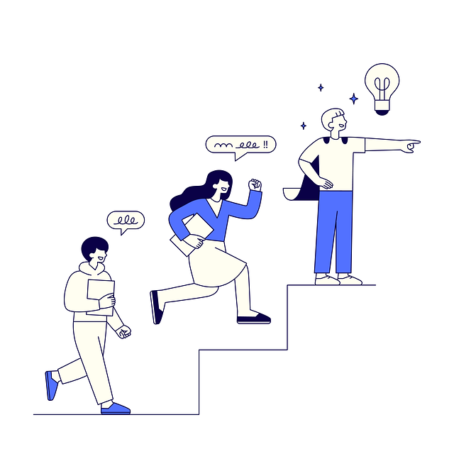

Comment ça marche ?
Le parcours Étika, clair, visuel et sans redondances.
Les grandes étapes
- Inscription des consommateurs et obtention d’un jeton numérique unique et gratuit (NFT).
- Ouverture et participation à des enchères pour sélectionner nos sponsors officiels et permettre à chaque consommateur participant de vendre son NFT.
- À la clôture des enchères, création du premier fonds éthique de consommateurs engagés.
- Distribution gratuite et périodique de nouveaux jetons numériques pour chaque consommateur afin de les vendre auprès de nos partenaires.
- Constitution d’une nouvelle épargne à partir de la vente de ces jetons numériques.
- Orientation de cette épargne pour financer les entreprises qui ont contribué à cette même épargne (circuit court auto-alimenté).
Qui fait quoi ?
Citoyen-consommateur
- Perçoit gratuitement et périodiquement des jetons numériques.
- Réalise ses emplettes auprès de la communauté Étika.
- Vend ses jetons, proportionnellement à ses achats lors du passage en caisse, pour alimenter sa nouvelle épargne automatiquement.
Commerçants, fournisseurs et sponsors officiels
- Vendent leurs produits et/ou services.
- Valident et achètent les jetons du consommateur pour gagner sa fidélité.
- Reçoivent un financement de la communauté pour avoir contribué à la constitution de la nouvelle épargne du citoyen-consommateur.
- Les sponsors officiels ont gagné l’exclusivité de leur catégorie en remportant les enchères sectorielles.
Fonds des consommateurs
- Vérifie le bon déroulement des smart contracts (automatisation des droits) qui canalisent l’épargne du consommateur et les différents flux financiers.
- Contrôle le strict respect des engagements (label) de nos partenaires (valeurs et pratiques financières).
- Vérifie et entretient la blockchain de la communauté.
- Entretient les relations avec les crypto-investisseurs qui souhaitent participer aux investissements structurels de la communauté.
